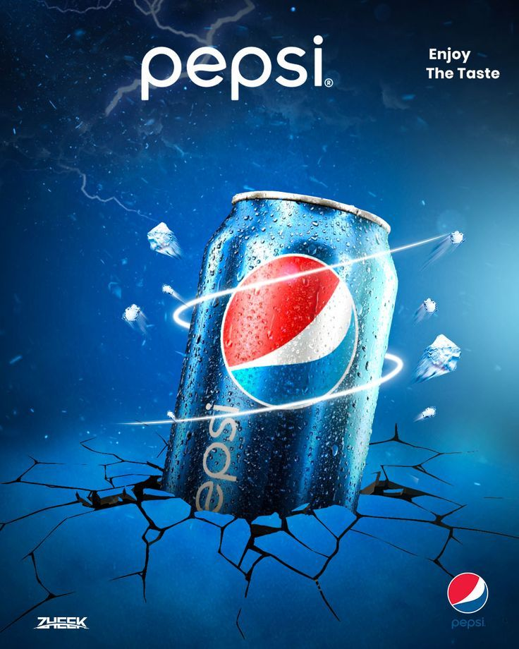

Introduction Coca-Cola and PepsiCo are well-established names in the soft drink industry with both in the fortune 500. The companies that own a wide spectrum of product lines in a highly competitive market have a fierce rivalry with each other and constantly competing for market share in almost all subsequent product verticals. We will analyze the sentiment of customers of these two companies with the help of 5000 tweets downloaded from each company’s official Twitter handle and analyzed in R. In this analysis, we will understand how we can customer sentiments from social media engagement of a brand (In this particular case tweeter).
Store Name
